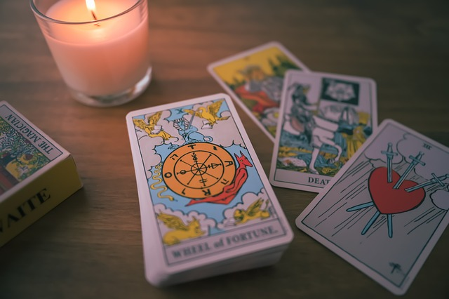
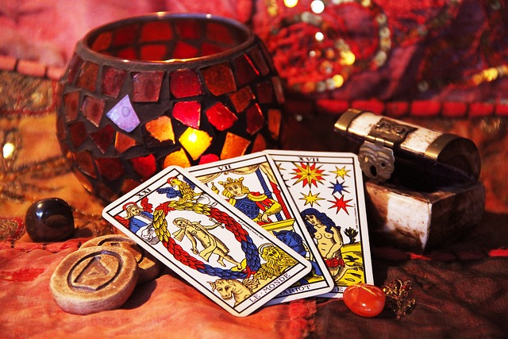

Tarot Fısıltısı'na Hoş Geldiniz
Tarot kartlarının gizemli dünyasında keşfe çıkmaya hazır olun.
Bize KatılınHizmetlerimiz
Kart Okuma
Profesyonel tarot okuyucularımızla geçmişinizi, bugününüzü ve geleceğinizi keşfedin.
Spiritüel Danışmanlık
Ruhsal yolculuğunuzda rehberlik sağlıyoruz.
Atölye Çalışmaları
Tarot öğrenmek isteyenler için özel eğitim ve atölyeler.
Hakkımızda
Tarot Fısıltısı, kadim bilgilerin modern dünyaya rehberlik etmesi için kuruldu. Daha fazla bilgi için...
Daha Fazlasını KeşfetGaleri


İletişim
Size nasıl yardımcı olabiliriz? İletişime geçmek için tıklayın.
Bize Ulaşın